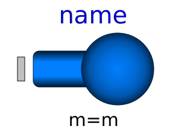
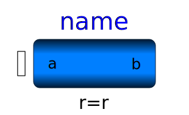
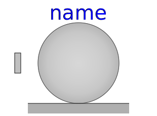

Package Parts contains rigid components of a multi-body system. These components may be used to build up more complicated structures. For example, a part may be built up of a "Body" and of several "FixedTranslation" components.
| Model | Description |
|---|---|
| Fixed | Frame fixed in world frame at a given position. It is
visualized with a shape, see shapeType below (the
frames on the two sides do not belong to the component): |
| FixedTranslation | Fixed translation of frame_b with respect to frame_a. It is
visualized with a shape, see shapeType below (the
frames on the two sides do not belong to the component): |
| FixedRotation | Fixed translation and fixed rotation of frame_b with respect to
frame_a It is visualized with a shape, see
shapeType below (the frames on the two sides do
not belong to the component): |
| Body | Rigid body with mass, inertia tensor and one frame connector.
It is visualized with a cylinder and a sphere at the center of
mass: |
| BodyShape | Rigid body with mass, inertia tensor, different shapes (see
shapeType below) for animation, and two frame
connectors: |
| Fixed BodyBox | Rigid body with box shape (mass and animation properties are
computed from box data and from density): |
| BodyCylinder | Rigid body with cylinder shape (mass and animation properties
are computed from cylinder data and from density): |
| PointMass | Rigid body where inertia tensor and rotation is
neglected: |
| Mounting1D | Propagate 1-dim. support torque to 3-dim. system |
| Rotor1D | 1D inertia attachable on 3-dim. bodies (without neglecting
dynamic effects) |
| BevelGear1D | 1D gearbox with arbitrary shaft directions (3D bearing frame) |
Components Fixed,
FixedTranslation, FixedRotation
and BodyShape are visualized according to
parameter shapeType, that may have the following
values (e.g., shapeType = "box"):

All the details of the visualization shape parameters are given in Visualizers.FixedShape
Colors in all animation parts are defined via parameter color. This is an Integer vector with 3 elements, {r, g, b}, and specifies the color of the shape. {r,g,b} are the "red", "green" and "blue" color parts, given in the ranges 0 .. 255, respectively. The predefined type MultiBody.Types.Color contains a menu definition of the colors used in the MultiBody library (this will be replaced by a color editor).
| Name | Description |
|---|---|
| Frame fixed in the world frame at a given position | |
| Fixed translation of frame_b with respect to frame_a | |
| Fixed translation followed by a fixed rotation of frame_b with respect to frame_a | |
|  Body | Rigid body with mass, inertia tensor and one frame connector (12 potential states) |
| Rigid body with mass, inertia tensor, different shapes for animation, and two frame connectors (12 potential states) | |
| Rigid body with box shape. Mass and animation properties are computed from box data and density (12 potential states) | |
|  BodyCylinder | Rigid body with cylinder shape. Mass and animation properties are computed from cylinder data and density (12 potential states) |
| Rigid body where body rotation and inertia tensor is neglected (6 potential states) | |
| Propagate 1-dim. support torque to 3-dim. system (provided world.driveTrainMechanics3D=true) | |
| 1D inertia attachable on 3-dim. bodies (3D dynamic effects are taken into account if world.driveTrainMechanics3D=true) | |
| BevelGear1D | 1D gearbox with arbitrary shaft directions and 3-dim. bearing frame (3D dynamic effects are taken into account provided world.driveTrainMechanics3D=true) |
|  RollingWheel | Ideal rolling wheel on flat surface z=0 (5 positional, 3 velocity degrees of freedom) |
| Ideal rolling wheel set consisting of two ideal rolling wheels connected together by an axis |